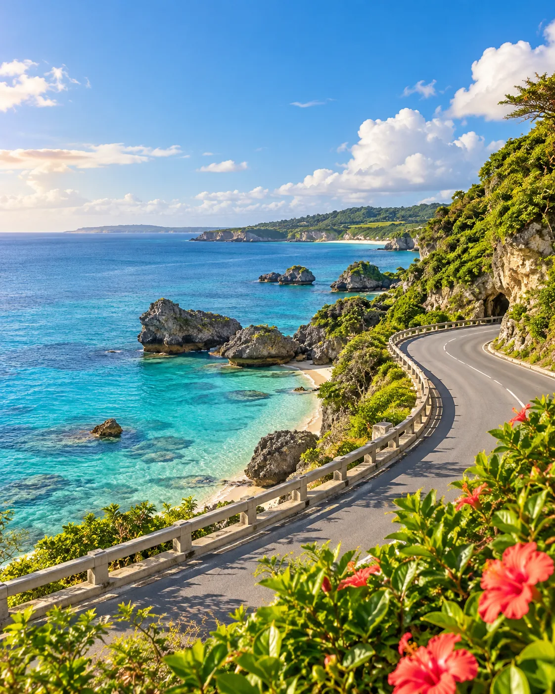

9/19 06:50 TPE
09:20 OKA
3 DAYS · 2 NIGHTS · SELF DRIVE
沖繩，這次走
熟客路線。
Ricoland、糸滿海鮮、Outlet、新型水族館與Nintendo Area，一趟俐落的南部購物公路旅行。

9/21 21:40 OKA
22:10 TPE
那霸市區 1晚
南城海景 1晚
20:00是合約上限
不要拿班機冒險
DAY 01 · SATURDAY
抵達那霸，慢慢進入沖繩模式
不取車 · 步行＋單軌DAY 02 · SUNDAY
Ricoland先買，再把下午留給Outlet
取車 · 豐見城 → 糸滿 → 南城Budget→Ricoland→糸滿魚市場→ASHIBINAA→Yuinchi
退房，前往那霸機場
搭單軌至機場，再轉Budget接駁車。
Budget辦理取車
週日預留約45分鐘，不把第一站排得太緊。
DAY 03 · MONDAY
新型水族館、皮克敏，然後從容返台
南城 → 豐崎 → 浦添 → 機場Yuinchi→DMM水族館→PARCO CITY→Budget→機場
BEFORE YOU GO
出發前快速檢查
- 現金糸滿魚市場部分攤位可能只收日圓現金。
- 假日車流9/21為日本國定假日，豐崎與浦添需預留塞車時間。
- 水族館票建議先買日期指定電子票，09:00–09:30左右入館。
- 還車驗車、加油與接駁都需要時間，18:30視為安全上限。